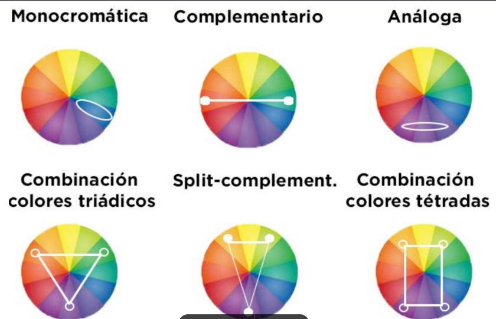

Es el resultado visual de las reglas de la rueda del color. Para crear una verdadera armonia de colores en el diseño de interiores, es importante compreder cuales cambian bien juntos y por que.

es cualquier conntenido multimedia, informacion o datos creados, distribuidos y consumidos en formato digital.
tipos de contenidos digitales| contenido digital | definicion | |
|---|---|---|
| blog | ideal para ayudar a llegar el nicho especifico, creando contenido que resuelva sus problemas. Tasmbien funciona como una herramienta para mejorar el posicionamiento. | |
| Newsletter | el email se ha vuelto una forma directa de estar en contacto constante con el nicho, ofreciendoles novedades interesantes de la marca. | |
| eBooks. | Permitiran ofrecerle al lector un conteniudo mas extenso, incorporando otros elementos creativos e infografias para sustentar la informacion. | |
| Videos. | son herramientas utiles para mostrar de forma mas explicita como funciona un producto o servicio. | |
| imagenes. | son un contenido digital de caracter visual que permitira mejorar la experiencia de los lectores, mostrando un contenido un contenido mas actractivo | |
| infografias. | son un contenido que hara una pagina wed mas atreactiva, ademas, resulta intteresante para compartir en red social. | |
| podcast. | es un tipo de contenido(audio) qye puede incrementar tiempo de tendencia de los lectores de un sitio wed. | |
| Glosarios, FAQ o diccionario. | suelen ser muy utiles para respondes a las dudas mas frecuentes de los usuarios.especialmente porque aayuda en la compresion de un tema muy tecnico |